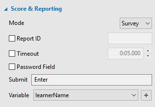

สรุปผลการทดสอบ (เพิ่มเติม)
โดย นิป เอมรัฐ
เปลี่ยนจาก Mode จาก Graded เป็น Survey จะทำให้โปรแกรมไม่นำมาคิดเป็นเปอร์เซนต์ที่ตอบถูก
ไม่เลือก Report ID เพื่อไม่ให้โปรแกรมนำกล่องนี้มารวมเป็นจำนวนข้อสอบ
เพิ่ม On Click...
Submit: All showing interactions
Go to Slide: Slide 3
เพิ่มปุ่ม OK

เปลี่ยน Mode จาก Graded เป็น Survey และยกเลิก Report ID
เมื่อคลิกปุ่มแล้ว ให้ดำเนินการส่ง (Submit) ชื่อผู้เรียนไปเก็บไว้ในตัวแปรที่สร้างขึ้น แลัวไปยังสไลด์ (Go to Slide) ถัดไป
สรุปผลการทดสอบ
โดย นิป เอมรัฐ
ตัวแปร (Variables) ที่ใช้ในการสรุปผล
ในสไลด์แผ่นสุดท้าย หลังการทดสอบ ให้เขียนข้อความดังต่อไปในนี้ลงใน Text Caption (Annotations > Text Caption)
วันที่: %apProjectLocaleDate%
เวลาที่ใช้ในการเรียน: %apElapsedTime%
จำนวนข้อสอบที่ทำ: %apQuizTakenInteractions% ข้อ
จำนวนข้อที่ทำถูก: %apQuizCorrectInteractions% ข้อ
ได้: %apQuizScore% คะแนน
คิดเป็น: %apQuizScorePercentage% เปอร์เซ็นต์
ดูตัวแปรทั้งหมดได้ที่เมนู Home > Variables
สไลด์แผ่นสุดท้าย สรุปผลการทำแบบทดสอบ ชื่อผู้เรียนเป็นผลจากตัวแปรที่เราสร้างขึ้นใช้เอง ดู--สรุปผลการทดสอบ (เพิ่มเติม)
Tuyen Luu. (2019, Jan 15). How to Review A Course in ActivePresenter 7. Restrieve from https://atomisystems.com/tutorials/ap7/how-to-review-a-course-in-activepresenter-7/
การแสดงชื่อผู้เรียนด้วยตัวแปรข้อความ (Text Variables)
โดย นิป เอมรัฐ
การรับชื่อของผู้เรียน แล้วนำมาใช้ตลอดการเรียน เพื่อสร้างความรู้สึก การเป็นส่วนตัวและการมีส่วนร่วมในการเรียน
แทรก textbox
เขียนคำแนะนำ เช่น
เชื่อมโยง Text Box เข้ากับตัวแปร
คลิกปุ่ม Add Variable รูป + ที่ Variable
ตั้งชื่อตัวแปรในช่อง Variable Name เช่น learnerName > OK
เลือก Attempts เป็น 1
ลบ Correct Message และ Incorrect Message
แทรกตัวแปรลงใน text-based object ใดๆ เช่น text caption, shape, button โดยการใส่ชื่อตัวแปรไว้ภายในสัญลักษณ์ percent signs (%) เช่น %learnerName%
Trang. (2018, Nov 29). Using Variables 02: Display Username with Text Variables. Restrieve from https://atomisystems.com/tutorials/ap7/using-text-variables-display-username/
แบบทดสอบแบบปรนัย
โดย นิป เอมรัฐ
ขั้นตอนการสร้างแบบทดสอบแบบปรนัย
เลือก New Slide > Blank
เลือก Interactions > Multiple Choice
พิมพ์คำถามและคำตอบแต่ละข้อลงไป
เพิ่มคำตอบโดยคลิกที่ส่วนของคำตอบ แล้วคลิกปุ่มเครื่องหมายบวก
ส่วนการลบคำตอบ คลิกเลือกคำตอบที่ต้องการลบ แล้วกดแป้น Delete
การกำหนดว่าตัวเลือกใดเป็นคำตอบที่ถูกต้อง ให้ดับเบิลคลิกที่ปุ่มหน้าคำตอบ
เปลี่ยนรูปแบบปุ่มได้จากแท็บ Format
การปรับลำดับตัวเลือก สามารถลากสลับได้เลย
กำหนดจำนวนคอลัมน์โดยเลือกคำตอบ แล้วเลือกไอคอนสีเขียว Size & Properties ที่หน้าต่าง Properties แล้วเปลี่ยนตัวเลขที่ Number of Column
การเปลี่ยน Layout เป็น None ช่วยให้สามารถวางตำแหน่งของตัวเลือกแต่ละข้อได้ตามตำแหน่งใดๆ ก็ได้ ตามต้องการโดยอิสระ (เหมาะสำหรับคำถามบางประเภท เช่น แผนที่ประเทศ)
การให้คะแนน คลิกที่ส่วนของคำตอบ เลือกไอคอน Interactivity ในส่วนของ Score & Reporting เลือก Mode เป็น Graded
ระบุคะแนนที่ Points และระบุจำนวนครั้งสูงสุดที่ให้ผู้เรียนตอบได้ ที่ Attempts
ระบุเวลาที่ Timeout
ที่ Mode เลือก Shuffle Answers จะเป็นการสุ่มสลับคำตอบทุกๆ ครั้งที่ผู้เรียนเข้ามาเรียนใหม่อีก
เลือก View > Feedback Master เพื่อเปลี่ยนข้อความย้อนกลับ เมื่อผู้เรียนตอบคำถามถูก หรือผิด ข้อนี้สำคัญมาก เพราะต้องเปลี่ยนข้อความเป็นภาษาไทย และเมื่อทำเสร็จแล้ว ปิดโดยคลิก Feedback Master > ปุ่มกากบาทสีแดง Close Master View
ทดสอบดูผลลัพธ์ที่ได้โดยเลือก HTML5 Preview > Tutorial
บันทึกงานและส่งออก (Export)
ลองทำดู
ทดลองสร้างแบบทดสอบแบบถูก-ผิด (True/False)
ActivePresenter. (2018, Aug 8). Creating Multiple Choice Questions - ActivePresenter 7. Restrieve from https://www.youtube.com/watch?v=3aB1zerNSl8
Atomi Systems, Inc. (2019). ActivePresenter 7 User Manual. n.p.
คอมพิวเตอร์ช่วยสอน
โดย นิป เอมรัฐ
คอมพิวเตอร์ช่วยสอน คืออะไร?
คอมพิวเตอร์ช่วยสอน (Computer Assisted Instruction) หรือซีเอไอ (CAI) หมายถึง การใช้คอมพิวเตอร์ในการศึกษา ชื่อหรือคำศัพท์อื่นๆ ที่มีความหมายเดียวกันนี้ เช่น
Computer Assisted Instruction (CAI)
Computer Aided Instruction (CAI)
Computer Assisted Learning (CAL)
Computer Based Education (CBE)
Computer Based Instruction (CBI)
Computer Enriched Instruction (CEI)
Computer Managed Instruction (CMI)
คำศัพท์ใหม่
Web Based Training
Web Based Learning
Web Based Instruction
ส่วนประกอบของคอมพิวเตอร์ช่วยสอน
โดยทั่วไปซีเอไอจะประกอบด้วยส่วนประกอบต่างๆ ดังนี้
text or multimedia content
multiple-choice questions
problems
immediate feedback
notes on incorrect responses
summarizes students’ performance
exercises for practice
Worksheets and tests
ชนิดของคอมพิวเตอร์ช่วยสอน
(Drill-and-practice)
(Tutorial)
เกมส์ (Games)
สถานการณ์จำลอง (Simulation)
(Discovery)
(Problem Solving)
WikiEducator. (2008, Sep 19). Computer Assisted Instruction (CAI). Restrieve from http://wikieducator.org/Computer_Assisted_Instruction_(CAI)